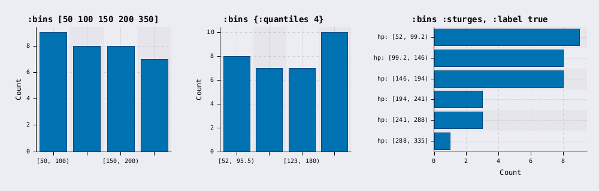
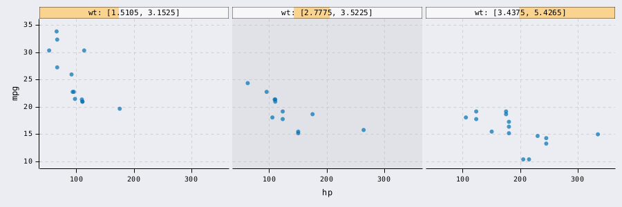

25 Data functions: levels
Functions turning values into levels before plotting: numbers binned into intervals, numbers or dates read as levels, levels ordered by a statistic, rows ranked within each x, and overlapping intervals (shingles) for conditioning. Each returns rows, a vector of levels (order-levels) or a mapping marker (categorical) for an ordinary plot; options are checked against the table shown.
(ns reference.data-levels
(:require [fastmath.stats :as stats]
[cljplot2.chart :as chart]
[cljplot2.core :as plot]
[cljplot2.data.levels :as levels]
[cljplot2.data.shingle :as shingle]
[cljplot2.describe :as describe]
[notebook-utils :as nu]))Data: Motor Trend car road tests (1974), R datasets package mtcars (Henderson & Velleman 1981); licence: Part of R (GPL-2 | GPL-3).
(def mtcars (nu/dataset :mtcars))| model | mpg | cyl | disp | hp | drat | wt | qsec | vs | am | gear | carb |
|---|---|---|---|---|---|---|---|---|---|---|---|
| Mazda RX4 | 21 | 6 | 160 | 110 | 3.9 | 2.62 | 16.46 | 0 | 1 | 4 | 4 |
| Mazda RX4 Wag | 21 | 6 | 160 | 110 | 3.9 | 2.875 | 17.02 | 0 | 1 | 4 | 4 |
| Datsun 710 | 22.8 | 4 | 108 | 93 | 3.85 | 2.32 | 18.61 | 1 | 1 | 4 | 1 |
| Hornet 4 Drive | 21.4 | 6 | 258 | 110 | 3.08 | 3.215 | 19.44 | 1 | 0 | 3 | 1 |
| Hornet Sportabout | 18.7 | 8 | 360 | 175 | 3.15 | 3.44 | 17.02 | 0 | 0 | 3 | 2 |
| Valiant | 18.1 | 6 | 225 | 105 | 2.76 | 3.46 | 20.22 | 1 | 0 | 3 | 1 |
| Duster 360 | 14.3 | 8 | 360 | 245 | 3.21 | 3.57 | 15.84 | 0 | 0 | 3 | 4 |
| Merc 240D | 24.4 | 4 | 146.7 | 62 | 3.69 | 3.19 | 20 | 1 | 0 | 4 | 2 |
| Merc 230 | 22.8 | 4 | 140.8 | 95 | 3.92 | 3.15 | 22.9 | 1 | 0 | 4 | 2 |
| Merc 280 | 19.2 | 6 | 167.6 | 123 | 3.92 | 3.44 | 18.3 | 1 | 0 | 4 | 4 |
| Merc 280C | 17.8 | 6 | 167.6 | 123 | 3.92 | 3.44 | 18.9 | 1 | 0 | 4 | 4 |
| Merc 450SE | 16.4 | 8 | 275.8 | 180 | 3.07 | 4.07 | 17.4 | 0 | 0 | 3 | 3 |
| Merc 450SL | 17.3 | 8 | 275.8 | 180 | 3.07 | 3.73 | 17.6 | 0 | 0 | 3 | 3 |
| Merc 450SLC | 15.2 | 8 | 275.8 | 180 | 3.07 | 3.78 | 18 | 0 | 0 | 3 | 3 |
| Cadillac Fleetwood | 10.4 | 8 | 472 | 205 | 2.93 | 5.25 | 17.98 | 0 | 0 | 3 | 4 |
| Lincoln Continental | 10.4 | 8 | 460 | 215 | 3 | 5.424 | 17.82 | 0 | 0 | 3 | 4 |
| Chrysler Imperial | 14.7 | 8 | 440 | 230 | 3.23 | 5.345 | 17.42 | 0 | 0 | 3 | 4 |
| Fiat 128 | 32.4 | 4 | 78.7 | 66 | 4.08 | 2.2 | 19.47 | 1 | 1 | 4 | 1 |
| Honda Civic | 30.4 | 4 | 75.7 | 52 | 4.93 | 1.615 | 18.52 | 1 | 1 | 4 | 2 |
| Toyota Corolla | 33.9 | 4 | 71.1 | 65 | 4.22 | 1.835 | 19.9 | 1 | 1 | 4 | 1 |
| Toyota Corona | 21.5 | 4 | 120.1 | 97 | 3.7 | 2.465 | 20.01 | 1 | 0 | 3 | 1 |
| Dodge Challenger | 15.5 | 8 | 318 | 150 | 2.76 | 3.52 | 16.87 | 0 | 0 | 3 | 2 |
| AMC Javelin | 15.2 | 8 | 304 | 150 | 3.15 | 3.435 | 17.3 | 0 | 0 | 3 | 2 |
| Camaro Z28 | 13.3 | 8 | 350 | 245 | 3.73 | 3.84 | 15.41 | 0 | 0 | 3 | 4 |
| Pontiac Firebird | 19.2 | 8 | 400 | 175 | 3.08 | 3.845 | 17.05 | 0 | 0 | 3 | 2 |
| Fiat X1-9 | 27.3 | 4 | 79 | 66 | 4.08 | 1.935 | 18.9 | 1 | 1 | 4 | 1 |
| Porsche 914-2 | 26 | 4 | 120.3 | 91 | 4.43 | 2.14 | 16.7 | 0 | 1 | 5 | 2 |
| Lotus Europa | 30.4 | 4 | 95.1 | 113 | 3.77 | 1.513 | 16.9 | 1 | 1 | 5 | 2 |
| Ford Pantera L | 15.8 | 8 | 351 | 264 | 4.22 | 3.17 | 14.5 | 0 | 1 | 5 | 4 |
| Ferrari Dino | 19.7 | 6 | 145 | 175 | 3.62 | 2.77 | 15.5 | 0 | 1 | 5 | 6 |
| Maserati Bora | 15 | 8 | 301 | 335 | 3.54 | 3.57 | 14.6 | 0 | 1 | 5 | 8 |
| Volvo 142E | 21.4 | 4 | 121 | 109 | 4.11 | 2.78 | 18.6 | 1 | 1 | 4 | 2 |
Data: Edgar Anderson’s iris measurements, R datasets package iris (Anderson 1935; Fisher 1936); licence: Part of R (GPL-2 | GPL-3).
(def iris (nu/dataset :iris))| sepal-length | sepal-width | petal-length | petal-width | species |
|---|---|---|---|---|
| 5.1 | 3.5 | 1.4 | 0.2 | setosa |
| 4.9 | 3 | 1.4 | 0.2 | setosa |
| 4.7 | 3.2 | 1.3 | 0.2 | setosa |
| 4.6 | 3.1 | 1.5 | 0.2 | setosa |
| 5 | 3.6 | 1.4 | 0.2 | setosa |
| 5.4 | 3.9 | 1.7 | 0.4 | setosa |
| 4.6 | 3.4 | 1.4 | 0.3 | setosa |
| 5 | 3.4 | 1.5 | 0.2 | setosa |
| 4.4 | 2.9 | 1.4 | 0.2 | setosa |
| 4.9 | 3.1 | 1.5 | 0.1 | setosa |
| 5.4 | 3.7 | 1.5 | 0.2 | setosa |
| 4.8 | 3.4 | 1.6 | 0.2 | setosa |
| 4.8 | 3 | 1.4 | 0.1 | setosa |
| 4.3 | 3 | 1.1 | 0.1 | setosa |
| 5.8 | 4 | 1.2 | 0.2 | setosa |
| 5.7 | 4.4 | 1.5 | 0.4 | setosa |
| 5.4 | 3.9 | 1.3 | 0.4 | setosa |
| 5.1 | 3.5 | 1.4 | 0.3 | setosa |
| 5.7 | 3.8 | 1.7 | 0.3 | setosa |
| 5.1 | 3.8 | 1.5 | 0.3 | setosa |
| 5.4 | 3.4 | 1.7 | 0.2 | setosa |
| 5.1 | 3.7 | 1.5 | 0.4 | setosa |
| 4.6 | 3.6 | 1 | 0.2 | setosa |
| 5.1 | 3.3 | 1.7 | 0.5 | setosa |
| 4.8 | 3.4 | 1.9 | 0.2 | setosa |
| 5 | 3 | 1.6 | 0.2 | setosa |
| 5 | 3.4 | 1.6 | 0.4 | setosa |
| 5.2 | 3.5 | 1.5 | 0.2 | setosa |
| 5.2 | 3.4 | 1.4 | 0.2 | setosa |
| 4.7 | 3.2 | 1.6 | 0.2 | setosa |
| 4.8 | 3.1 | 1.6 | 0.2 | setosa |
| 5.4 | 3.4 | 1.5 | 0.4 | setosa |
| 5.2 | 4.1 | 1.5 | 0.1 | setosa |
| 5.5 | 4.2 | 1.4 | 0.2 | setosa |
| 4.9 | 3.1 | 1.5 | 0.2 | setosa |
| 5 | 3.2 | 1.2 | 0.2 | setosa |
| 5.5 | 3.5 | 1.3 | 0.2 | setosa |
| 4.9 | 3.6 | 1.4 | 0.1 | setosa |
| 4.4 | 3 | 1.3 | 0.2 | setosa |
| 5.1 | 3.4 | 1.5 | 0.2 | setosa |
| 5 | 3.5 | 1.3 | 0.3 | setosa |
| 4.5 | 2.3 | 1.3 | 0.3 | setosa |
| 4.4 | 3.2 | 1.3 | 0.2 | setosa |
| 5 | 3.5 | 1.6 | 0.6 | setosa |
| 5.1 | 3.8 | 1.9 | 0.4 | setosa |
| 4.8 | 3 | 1.4 | 0.3 | setosa |
| 5.1 | 3.8 | 1.6 | 0.2 | setosa |
| 4.6 | 3.2 | 1.4 | 0.2 | setosa |
| 5.3 | 3.7 | 1.5 | 0.2 | setosa |
| 5 | 3.3 | 1.4 | 0.2 | setosa |
| 7 | 3.2 | 4.7 | 1.4 | versicolor |
| 6.4 | 3.2 | 4.5 | 1.5 | versicolor |
| 6.9 | 3.1 | 4.9 | 1.5 | versicolor |
| 5.5 | 2.3 | 4 | 1.3 | versicolor |
| 6.5 | 2.8 | 4.6 | 1.5 | versicolor |
| 5.7 | 2.8 | 4.5 | 1.3 | versicolor |
| 6.3 | 3.3 | 4.7 | 1.6 | versicolor |
| 4.9 | 2.4 | 3.3 | 1 | versicolor |
| 6.6 | 2.9 | 4.6 | 1.3 | versicolor |
| 5.2 | 2.7 | 3.9 | 1.4 | versicolor |
| 5 | 2 | 3.5 | 1 | versicolor |
| 5.9 | 3 | 4.2 | 1.5 | versicolor |
| 6 | 2.2 | 4 | 1 | versicolor |
| 6.1 | 2.9 | 4.7 | 1.4 | versicolor |
| 5.6 | 2.9 | 3.6 | 1.3 | versicolor |
| 6.7 | 3.1 | 4.4 | 1.4 | versicolor |
| 5.6 | 3 | 4.5 | 1.5 | versicolor |
| 5.8 | 2.7 | 4.1 | 1 | versicolor |
| 6.2 | 2.2 | 4.5 | 1.5 | versicolor |
| 5.6 | 2.5 | 3.9 | 1.1 | versicolor |
| 5.9 | 3.2 | 4.8 | 1.8 | versicolor |
| 6.1 | 2.8 | 4 | 1.3 | versicolor |
| 6.3 | 2.5 | 4.9 | 1.5 | versicolor |
| 6.1 | 2.8 | 4.7 | 1.2 | versicolor |
| 6.4 | 2.9 | 4.3 | 1.3 | versicolor |
| 6.6 | 3 | 4.4 | 1.4 | versicolor |
| 6.8 | 2.8 | 4.8 | 1.4 | versicolor |
| 6.7 | 3 | 5 | 1.7 | versicolor |
| 6 | 2.9 | 4.5 | 1.5 | versicolor |
| 5.7 | 2.6 | 3.5 | 1 | versicolor |
| 5.5 | 2.4 | 3.8 | 1.1 | versicolor |
| 5.5 | 2.4 | 3.7 | 1 | versicolor |
| 5.8 | 2.7 | 3.9 | 1.2 | versicolor |
| 6 | 2.7 | 5.1 | 1.6 | versicolor |
| 5.4 | 3 | 4.5 | 1.5 | versicolor |
| 6 | 3.4 | 4.5 | 1.6 | versicolor |
| 6.7 | 3.1 | 4.7 | 1.5 | versicolor |
| 6.3 | 2.3 | 4.4 | 1.3 | versicolor |
| 5.6 | 3 | 4.1 | 1.3 | versicolor |
| 5.5 | 2.5 | 4 | 1.3 | versicolor |
| 5.5 | 2.6 | 4.4 | 1.2 | versicolor |
| 6.1 | 3 | 4.6 | 1.4 | versicolor |
| 5.8 | 2.6 | 4 | 1.2 | versicolor |
| 5 | 2.3 | 3.3 | 1 | versicolor |
| 5.6 | 2.7 | 4.2 | 1.3 | versicolor |
| 5.7 | 3 | 4.2 | 1.2 | versicolor |
| 5.7 | 2.9 | 4.2 | 1.3 | versicolor |
| 6.2 | 2.9 | 4.3 | 1.3 | versicolor |
| 5.1 | 2.5 | 3 | 1.1 | versicolor |
| 5.7 | 2.8 | 4.1 | 1.3 | versicolor |
| … | … | … | … | … |
25.1 levels/bin
Adds the bin of a numeric value to every row - an interval [lo, hi) (the last one closed), printed like R’s cut; a missing or non-numeric value gets no bin.
| Option | Type | Default | Description |
|---|---|---|---|
| :as (required) | the key of the bin column | the key of the bin column added to every row (required) | |
| :bins | keyword or vector of a finite number (at least 2) or quantile bins {:quantiles q :estimation e}: q a positive count or a vector of increasing probabilities strictly between 0 and 1, e one of [:legacy :r1 :r2 :r3 :r4 :r5 :r6 :r7 :r8 :r9] or a positive integer | :sturges | the bins: a fastmath bin-estimation method, a bin count, a vector of increasing breaks or quantile bins {:quantiles q :estimation e} |
| :digits | a positive integer | 3 | the fewest significant digits of the printed bounds (more when needed to keep the printed breaks distinct) |
| :label | string or true or false or nil | the series name printed in every bin: a string, or true for the accessor's name (keyword accessors only); none when absent |
The bins of the cars’ horsepower - five equal-width bins, bounds printed with 2 significant digits - as a new column:
| hp-bin | qsec | cyl | am | gear | disp | wt | drat | hp | mpg | vs | carb | model |
|---|---|---|---|---|---|---|---|---|---|---|---|---|
| [110, 170) | 16.46 | 6 | 1 | 4 | 160 | 2.62 | 3.9 | 110 | 21 | 0 | 4 | Mazda RX4 |
| [110, 170) | 17.02 | 6 | 1 | 4 | 160 | 2.875 | 3.9 | 110 | 21 | 0 | 4 | Mazda RX4 Wag |
| [52, 110) | 18.61 | 4 | 1 | 4 | 108 | 2.32 | 3.85 | 93 | 22.8 | 1 | 1 | Datsun 710 |
| [110, 170) | 19.44 | 6 | 0 | 3 | 258 | 3.215 | 3.08 | 110 | 21.4 | 1 | 1 | Hornet 4 Drive |
| [170, 220) | 17.02 | 8 | 0 | 3 | 360 | 3.44 | 3.15 | 175 | 18.7 | 0 | 2 | Hornet Sportabout |
| [52, 110) | 20.22 | 6 | 0 | 3 | 225 | 3.46 | 2.76 | 105 | 18.1 | 1 | 1 | Valiant |
| [220, 280) | 15.84 | 8 | 0 | 3 | 360 | 3.57 | 3.21 | 245 | 14.3 | 0 | 4 | Duster 360 |
| [52, 110) | 20 | 4 | 0 | 4 | 146.7 | 3.19 | 3.69 | 62 | 24.4 | 1 | 2 | Merc 240D |
| [52, 110) | 22.9 | 4 | 0 | 4 | 140.8 | 3.15 | 3.92 | 95 | 22.8 | 1 | 2 | Merc 230 |
| [110, 170) | 18.3 | 6 | 0 | 4 | 167.6 | 3.44 | 3.92 | 123 | 19.2 | 1 | 4 | Merc 280 |
| [110, 170) | 18.9 | 6 | 0 | 4 | 167.6 | 3.44 | 3.92 | 123 | 17.8 | 1 | 4 | Merc 280C |
| [170, 220) | 17.4 | 8 | 0 | 3 | 275.8 | 4.07 | 3.07 | 180 | 16.4 | 0 | 3 | Merc 450SE |
| [170, 220) | 17.6 | 8 | 0 | 3 | 275.8 | 3.73 | 3.07 | 180 | 17.3 | 0 | 3 | Merc 450SL |
| [170, 220) | 18 | 8 | 0 | 3 | 275.8 | 3.78 | 3.07 | 180 | 15.2 | 0 | 3 | Merc 450SLC |
| [170, 220) | 17.98 | 8 | 0 | 3 | 472 | 5.25 | 2.93 | 205 | 10.4 | 0 | 4 | Cadillac Fleetwood |
| [170, 220) | 17.82 | 8 | 0 | 3 | 460 | 5.424 | 3 | 215 | 10.4 | 0 | 4 | Lincoln Continental |
| [220, 280) | 17.42 | 8 | 0 | 3 | 440 | 5.345 | 3.23 | 230 | 14.7 | 0 | 4 | Chrysler Imperial |
| [52, 110) | 19.47 | 4 | 1 | 4 | 78.7 | 2.2 | 4.08 | 66 | 32.4 | 1 | 1 | Fiat 128 |
| [52, 110) | 18.52 | 4 | 1 | 4 | 75.7 | 1.615 | 4.93 | 52 | 30.4 | 1 | 2 | Honda Civic |
| [52, 110) | 19.9 | 4 | 1 | 4 | 71.1 | 1.835 | 4.22 | 65 | 33.9 | 1 | 1 | Toyota Corolla |
| [52, 110) | 20.01 | 4 | 0 | 3 | 120.1 | 2.465 | 3.7 | 97 | 21.5 | 1 | 1 | Toyota Corona |
| [110, 170) | 16.87 | 8 | 0 | 3 | 318 | 3.52 | 2.76 | 150 | 15.5 | 0 | 2 | Dodge Challenger |
| [110, 170) | 17.3 | 8 | 0 | 3 | 304 | 3.435 | 3.15 | 150 | 15.2 | 0 | 2 | AMC Javelin |
| [220, 280) | 15.41 | 8 | 0 | 3 | 350 | 3.84 | 3.73 | 245 | 13.3 | 0 | 4 | Camaro Z28 |
| [170, 220) | 17.05 | 8 | 0 | 3 | 400 | 3.845 | 3.08 | 175 | 19.2 | 0 | 2 | Pontiac Firebird |
| [52, 110) | 18.9 | 4 | 1 | 4 | 79 | 1.935 | 4.08 | 66 | 27.3 | 1 | 1 | Fiat X1-9 |
| [52, 110) | 16.7 | 4 | 1 | 5 | 120.3 | 2.14 | 4.43 | 91 | 26 | 0 | 2 | Porsche 914-2 |
| [110, 170) | 16.9 | 4 | 1 | 5 | 95.1 | 1.513 | 3.77 | 113 | 30.4 | 1 | 2 | Lotus Europa |
| [220, 280) | 14.5 | 8 | 1 | 5 | 351 | 3.17 | 4.22 | 264 | 15.8 | 0 | 4 | Ford Pantera L |
| [170, 220) | 15.5 | 6 | 1 | 5 | 145 | 2.77 | 3.62 | 175 | 19.7 | 0 | 6 | Ferrari Dino |
| [280, 340] | 14.6 | 8 | 1 | 5 | 301 | 3.57 | 3.54 | 335 | 15 | 0 | 8 | Maserati Bora |
| [110, 170) | 18.6 | 4 | 1 | 4 | 121 | 2.78 | 4.11 | 109 | 21.4 | 1 | 2 | Volvo 142E |
Bins are levels: counted by a bar chart (:stat :count), in interval order. Explicit breaks (left), quantile bins of equal counts (middle), and the series name printed in every bin (right):
(plot/render-image (plot/arrange [{:data (levels/bin mtcars :hp {:as :bin :bins [50 100 150 200 350]})
:mapping {:x :bin}
:charts [(chart/bar {:stat :count})]
:labels {:title ":bins [50 100 150 200 350]"}}
{:data (levels/bin mtcars :hp {:as :bin :bins {:quantiles 4}})
:mapping {:x :bin}
:charts [(chart/bar {:stat :count})]
:labels {:title ":bins {:quantiles 4}"}}
{:data (levels/bin mtcars :hp {:as :bin :bins :sturges :label true})
:mapping {:y :bin}
:charts [(chart/bar {:stat :count})]
:scales {:y {:reverse true}}
:labels {:title ":bins :sturges, :label true"}}]
{:columns 3 :widths [1 1 1.3]})
{:width 1000 :height 320})
25.2 levels/categorical
A mapping marker: the accessor reads its values as usual, and its dimension is declared categorical - numbers or dates become levels (bands on a position axis, an ordinal legend for an aesthetic). It takes no options.
(plot/render-image (plot/arrange [{:data mtcars
:mapping {:x :cyl :y :mpg}
:charts [(chart/scatter)]
:labels {:title ":x :cyl - numbers"}}
{:data mtcars
:mapping {:x (levels/categorical :cyl) :y :mpg :color (levels/categorical :gear)}
:charts [(chart/box)]
:labels {:title ":x (levels/categorical :cyl), colour by gear"}}]
{:columns 2 :widths [1 1.25]})
{:width 900 :height 320})
25.3 levels/order-levels
The levels of a column ordered by a statistic of a value in each level - for a scale :domain.
| Option | Type | Default | Description |
|---|---|---|---|
| :descending | true or false | false | order the levels by the statistic descending |
Iris species by their median petal length, ascending and descending:
(levels/order-levels iris :species :petal-length stats/median)["setosa" "versicolor" "virginica"](levels/order-levels iris :species :petal-length stats/median {:descending true})["virginica" "versicolor" "setosa"]The descending order as the domain of the level axis - the cars’ carburettor counts, highest median mpg first:
(plot/render-image {:data mtcars
:mapping {:x (levels/categorical :carb) :y :mpg}
:charts [(chart/box)]
:scales {:x {:domain (levels/order-levels mtcars :carb :mpg stats/median {:descending true})}}
:labels {:title "carburettors by median mpg"}}
{:width 600 :height 320})
25.4 levels/rank-rows
Ranks the rows sharing an x by a value - rank 1 the highest by default - e.g. for a bump chart (a line through the ranks on a reversed y domain).
| Option | Type | Default | Description |
|---|---|---|---|
| :as | the key of the rank column | :rank | the key of the rank column added to every row |
| :descending | true or false | true | rank the highest value first (rank 1) |
| :ties | one of :average :dense :first :last :max :min :random | :min | the fastmath.core/rank tie strategy (:min gives 1, 1, 3; :average gives doubles) |
(def sales (for [[year amounts] [[2020 [5 9 7]] [2021 [8 9 4]] [2022 [9 6 6]] [2023 [7 10 5]]]
[product amount] (map vector ["apples" "pears" "plums"] amounts)]
{:year year :product product :amount amount}))| year | product | amount |
|---|---|---|
| 2020 | apples | 5 |
| 2020 | pears | 9 |
| 2020 | plums | 7 |
| 2021 | apples | 8 |
| 2021 | pears | 9 |
| 2021 | plums | 4 |
| 2022 | apples | 9 |
| 2022 | pears | 6 |
| 2022 | plums | 6 |
| 2023 | apples | 7 |
| 2023 | pears | 10 |
| 2023 | plums | 5 |
The ranks under :place, ties taking the lowest rank (2022: pears and plums share 2):
| year | product | amount | place |
|---|---|---|---|
| 2020 | apples | 5 | 3 |
| 2020 | pears | 9 | 1 |
| 2020 | plums | 7 | 2 |
| 2021 | apples | 8 | 2 |
| 2021 | pears | 9 | 1 |
| 2021 | plums | 4 | 3 |
| 2022 | apples | 9 | 1 |
| 2022 | pears | 6 | 2 |
| 2022 | plums | 6 | 2 |
| 2023 | apples | 7 | 2 |
| 2023 | pears | 10 | 1 |
| 2023 | plums | 5 | 3 |
A bump chart of the ranks (left; rank 1 on top with the y scale’s :reverse true, see Order and direction), and ranks counted from the lowest amount with average ties (right):
(plot/render-image (plot/arrange [{:data (levels/rank-rows sales :year :amount)
:mapping {:x :year :y :rank :color :product}
:charts [(chart/line {:line-width 3}) (chart/scatter {:size 12})]
:scales {:y {:domain [0.7 3.3] :reverse true :ticks [1 2 3]}}
:labels {:title "ranks, highest first" :y "rank"}
:legend false}
{:data (levels/rank-rows sales :year :amount {:descending false :ties :average})
:mapping {:x :year :y :rank :color :product}
:charts [(chart/line {:line-width 3}) (chart/scatter {:size 12})]
:scales {:y {:domain [0.7 3.3] :reverse true :ticks [1 1.5 2 2.5 3]}}
:labels {:title ":descending false, :ties :average" :y "rank"}}]
{:columns 2 :widths [1 1.25]})
{:width 900 :height 320})
25.5 shingle/shingle
Repeats every row once per interval containing its value - overlapping intervals (a lattice shingle) to condition on a continuous variable, typically as a facet.
| Option | Type | Default | Description |
|---|---|---|---|
| :as (required) | the key of the interval column | the key of the interval column added to every repeated row (required) | |
| :intervals | sequential of [a finite number, a finite number] (at least 1) | equal-count intervals from :n and :overlap | the intervals [[lo hi] ...], closed, lo <= hi |
| :n | a positive integer | 6 | the number of equal-count intervals (fewer when the data can't support them; ignored with :intervals) |
| :overlap | a number in [0 1) | 0.5 | the fraction of points shared by neighbouring equal-count intervals (ignored with :intervals) |
| :label | string or true or false or nil | the series name printed in every interval (and so in facet strips): a string, or true for the accessor's name (keyword accessors only); none when absent |
Equal-count intervals of the cars’ weight - 3 of them, neighbours sharing a quarter of their points - as a facet of mpg against horsepower (facets); the series name is printed in every strip:
(plot/render-image {:data (shingle/shingle mtcars :wt {:as :weight :n 3 :overlap 0.25 :label true})
:mapping {:x :hp :y :mpg :facet-col :weight}
:charts [(chart/scatter)]}
{:width 900 :height 300})
Explicit intervals instead, here overlapping by hand:
| qsec | cyl | am | gear | disp | wt | weight | drat | hp | mpg | vs | carb | model |
|---|---|---|---|---|---|---|---|---|---|---|---|---|
| 16.46 | 6 | 1 | 4 | 160 | 2.62 | [1.5, 3] | 3.9 | 110 | 21 | 0 | 4 | Mazda RX4 |
| 16.46 | 6 | 1 | 4 | 160 | 2.62 | [2.5, 4] | 3.9 | 110 | 21 | 0 | 4 | Mazda RX4 |
| 17.02 | 6 | 1 | 4 | 160 | 2.875 | [1.5, 3] | 3.9 | 110 | 21 | 0 | 4 | Mazda RX4 Wag |
| 17.02 | 6 | 1 | 4 | 160 | 2.875 | [2.5, 4] | 3.9 | 110 | 21 | 0 | 4 | Mazda RX4 Wag |
| 18.61 | 4 | 1 | 4 | 108 | 2.32 | [1.5, 3] | 3.85 | 93 | 22.8 | 1 | 1 | Datsun 710 |
| 19.44 | 6 | 0 | 3 | 258 | 3.215 | [2.5, 4] | 3.08 | 110 | 21.4 | 1 | 1 | Hornet 4 Drive |
| 17.02 | 8 | 0 | 3 | 360 | 3.44 | [2.5, 4] | 3.15 | 175 | 18.7 | 0 | 2 | Hornet Sportabout |
| 20.22 | 6 | 0 | 3 | 225 | 3.46 | [2.5, 4] | 2.76 | 105 | 18.1 | 1 | 1 | Valiant |
| 15.84 | 8 | 0 | 3 | 360 | 3.57 | [2.5, 4] | 3.21 | 245 | 14.3 | 0 | 4 | Duster 360 |
| 15.84 | 8 | 0 | 3 | 360 | 3.57 | [3.5, 5.5] | 3.21 | 245 | 14.3 | 0 | 4 | Duster 360 |
| 20 | 4 | 0 | 4 | 146.7 | 3.19 | [2.5, 4] | 3.69 | 62 | 24.4 | 1 | 2 | Merc 240D |
| 22.9 | 4 | 0 | 4 | 140.8 | 3.15 | [2.5, 4] | 3.92 | 95 | 22.8 | 1 | 2 | Merc 230 |
| 18.3 | 6 | 0 | 4 | 167.6 | 3.44 | [2.5, 4] | 3.92 | 123 | 19.2 | 1 | 4 | Merc 280 |
| 18.9 | 6 | 0 | 4 | 167.6 | 3.44 | [2.5, 4] | 3.92 | 123 | 17.8 | 1 | 4 | Merc 280C |
| 17.4 | 8 | 0 | 3 | 275.8 | 4.07 | [3.5, 5.5] | 3.07 | 180 | 16.4 | 0 | 3 | Merc 450SE |
| 17.6 | 8 | 0 | 3 | 275.8 | 3.73 | [2.5, 4] | 3.07 | 180 | 17.3 | 0 | 3 | Merc 450SL |
| 17.6 | 8 | 0 | 3 | 275.8 | 3.73 | [3.5, 5.5] | 3.07 | 180 | 17.3 | 0 | 3 | Merc 450SL |
| 18 | 8 | 0 | 3 | 275.8 | 3.78 | [2.5, 4] | 3.07 | 180 | 15.2 | 0 | 3 | Merc 450SLC |
| 18 | 8 | 0 | 3 | 275.8 | 3.78 | [3.5, 5.5] | 3.07 | 180 | 15.2 | 0 | 3 | Merc 450SLC |
| 17.98 | 8 | 0 | 3 | 472 | 5.25 | [3.5, 5.5] | 2.93 | 205 | 10.4 | 0 | 4 | Cadillac Fleetwood |
| 17.82 | 8 | 0 | 3 | 460 | 5.424 | [3.5, 5.5] | 3 | 215 | 10.4 | 0 | 4 | Lincoln Continental |
| 17.42 | 8 | 0 | 3 | 440 | 5.345 | [3.5, 5.5] | 3.23 | 230 | 14.7 | 0 | 4 | Chrysler Imperial |
| 19.47 | 4 | 1 | 4 | 78.7 | 2.2 | [1.5, 3] | 4.08 | 66 | 32.4 | 1 | 1 | Fiat 128 |
| 18.52 | 4 | 1 | 4 | 75.7 | 1.615 | [1.5, 3] | 4.93 | 52 | 30.4 | 1 | 2 | Honda Civic |
| 19.9 | 4 | 1 | 4 | 71.1 | 1.835 | [1.5, 3] | 4.22 | 65 | 33.9 | 1 | 1 | Toyota Corolla |
| 20.01 | 4 | 0 | 3 | 120.1 | 2.465 | [1.5, 3] | 3.7 | 97 | 21.5 | 1 | 1 | Toyota Corona |
| 16.87 | 8 | 0 | 3 | 318 | 3.52 | [2.5, 4] | 2.76 | 150 | 15.5 | 0 | 2 | Dodge Challenger |
| 16.87 | 8 | 0 | 3 | 318 | 3.52 | [3.5, 5.5] | 2.76 | 150 | 15.5 | 0 | 2 | Dodge Challenger |
| 17.3 | 8 | 0 | 3 | 304 | 3.435 | [2.5, 4] | 3.15 | 150 | 15.2 | 0 | 2 | AMC Javelin |
| 15.41 | 8 | 0 | 3 | 350 | 3.84 | [2.5, 4] | 3.73 | 245 | 13.3 | 0 | 4 | Camaro Z28 |
| 15.41 | 8 | 0 | 3 | 350 | 3.84 | [3.5, 5.5] | 3.73 | 245 | 13.3 | 0 | 4 | Camaro Z28 |
| 17.05 | 8 | 0 | 3 | 400 | 3.845 | [2.5, 4] | 3.08 | 175 | 19.2 | 0 | 2 | Pontiac Firebird |
| 17.05 | 8 | 0 | 3 | 400 | 3.845 | [3.5, 5.5] | 3.08 | 175 | 19.2 | 0 | 2 | Pontiac Firebird |
| 18.9 | 4 | 1 | 4 | 79 | 1.935 | [1.5, 3] | 4.08 | 66 | 27.3 | 1 | 1 | Fiat X1-9 |
| 16.7 | 4 | 1 | 5 | 120.3 | 2.14 | [1.5, 3] | 4.43 | 91 | 26 | 0 | 2 | Porsche 914-2 |
| 16.9 | 4 | 1 | 5 | 95.1 | 1.513 | [1.5, 3] | 3.77 | 113 | 30.4 | 1 | 2 | Lotus Europa |
| 14.5 | 8 | 1 | 5 | 351 | 3.17 | [2.5, 4] | 4.22 | 264 | 15.8 | 0 | 4 | Ford Pantera L |
| 15.5 | 6 | 1 | 5 | 145 | 2.77 | [1.5, 3] | 3.62 | 175 | 19.7 | 0 | 6 | Ferrari Dino |
| 15.5 | 6 | 1 | 5 | 145 | 2.77 | [2.5, 4] | 3.62 | 175 | 19.7 | 0 | 6 | Ferrari Dino |
| 14.6 | 8 | 1 | 5 | 301 | 3.57 | [2.5, 4] | 3.54 | 335 | 15 | 0 | 8 | Maserati Bora |
| 14.6 | 8 | 1 | 5 | 301 | 3.57 | [3.5, 5.5] | 3.54 | 335 | 15 | 0 | 8 | Maserati Bora |
| 18.6 | 4 | 1 | 4 | 121 | 2.78 | [1.5, 3] | 4.11 | 109 | 21.4 | 1 | 2 | Volvo 142E |
| 18.6 | 4 | 1 | 4 | 121 | 2.78 | [2.5, 4] | 4.11 | 109 | 21.4 | 1 | 2 | Volvo 142E |
source: notebooks/reference/data_levels.clj